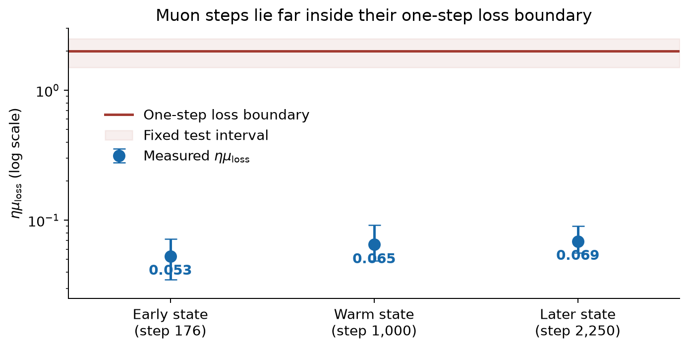
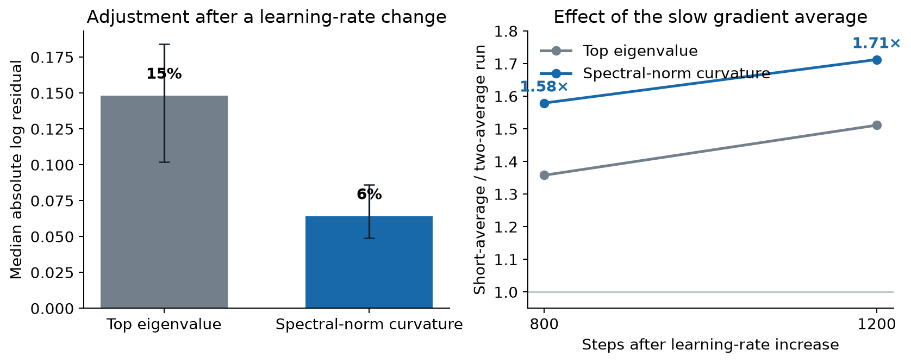

Why momentum changes Muon's edge of stability
Changing the learning rate makes curvature move in the opposite direction over the next thousand training steps. That response disappears when we remove Muon's long gradient average.
We studied a 12-layer, width-768 transformer trained with Muon on FineWeb at NanoGPT speedrun scale. At training step 2,250, we copied the same model and optimizer state into three runs that saw the same minibatches. One run kept the learning rate fixed. The other two multiplied it by 1.30 or 0.77. All three runs remained stable.
For each of the model's 72 hidden weight matrices, we measured \(\lambda_1\), the largest eigenvalue of the local Hessian for that matrix. The table reports the median change from the shared starting state.
Curvature moves after the learning rate changes
| Training steps after the change | Change in \(\lambda_1\) after multiplying the learning rate by 1.30 | Change in \(\lambda_1\) after multiplying the learning rate by 0.77 |
|---|---|---|
| 50 | −5% | +5% |
| 400 | −23% | +23% |
| 800 | −27% | +39% |
| 1,200 | −32% | +38% |
The curvature response has the sign expected at the edge of stability: a larger learning rate is followed by lower curvature, while a smaller learning rate is followed by higher curvature. The response takes hundreds of steps. It is a change in the network reached by training, not an algebraic change inside Muon's polar map.
Let \(\eta_0\lambda_{1,0}\) denote the product before the learning-rate change. We call the later response a curvature adjustment when \(\eta_t\lambda_{1,t}\) moves back toward that earlier product. This describes the measured trajectory. It does not assert exact equality or imply that either run approached divergence.
The slow gradient average is required for the curvature response
We repeated the 1.30 learning-rate increase from the same saved state and with the same minibatches, changing only the momentum hyperparameters. The two-average run mixed exponential gradient averages with average lags of about 6 and 49 steps. The short-average run retained only the 6-step average.
For a gradient component that flips sign every step, both momentum settings reduce its amplitude by almost the same factor. Their curvature trajectories nevertheless separate over the next 1,200 steps.
| Training steps after the increase | Change in \(\lambda_1\), two-average momentum | Change in \(\lambda_1\), short-average momentum |
|---|---|---|
| 150 | −18% | −10% |
| 400 | −23% | −4% |
| 1,200 | −32% | +6% |
The 49-step gradient average is the specific momentum property isolated by this comparison. With it, the network moves to lower curvature after the learning-rate increase. Without it, curvature returns to its starting level and training stagnates. The final validation losses are about 3.45 and 3.544, respectively. A scalar that measures only the response to exact sign alternation cannot explain the difference.
Momentum affects the slow evolution of curvature through information retained in its gradient averages. The relevant state includes more than the current weights, current gradient, and current Hessian.
The stability calculation must include the momentum buffers
Muon first combines the current gradient matrix with exponential gradient averages, then applies the polar map. For one weight matrix, the implemented recurrence is
\[ m_{j,t}=\beta_jm_{j,t-1}+(1-\beta_j)g_t,\qquad p_t=(1-\alpha)g_t+\alpha\sum_j a_jm_{j,t}, \] \[ X_{t+1}=(1-\eta d)X_t-\eta s\,\operatorname{polar}(p_t). \]Here \(m_{j,t}\) is one gradient average, \(\beta_j\) sets its average lag, \(a_j\) sets its relative weight, and \(\alpha\) sets the total momentum mixture. The remaining scalars \(d\) and \(s\) are weight decay and Muon's matrix-shape scale. A perturbation changes both the weights and every gradient average:
\[ \begin{aligned} \delta m_{j,t} &=\beta_j\delta m_{j,t-1}+(1-\beta_j)H_t[\delta X_t],\\ \delta p_t &=(1-\alpha)H_t[\delta X_t]+\alpha\sum_j a_j\delta m_{j,t},\\ \delta X_{t+1} &=(1-\eta d)\delta X_t-\eta s\, D\operatorname{polar}_{p_t}[\delta p_t]. \end{aligned} \]The exact local stability boundary is determined by the largest multiplier of this augmented recurrence. Here \(H_t\) is the Hessian operator at \(X_t\), and \(D\operatorname{polar}_{p_t}\) is the derivative of the polar map at \(p_t\). The multiplier depends on the Hessian, the contents of the gradient averages, their decay rates, and \(p_t\). No scalar computed from the current Hessian contains all of this information.
Scale invariance gives the same conclusion. Multiplying the loss by a positive constant rescales the gradients, the gradient averages, and the Hessian, while the exact polar direction is unchanged. A Hessian quantity that rescales with the loss cannot be Muon's complete critical invariant.
An alternating gradient field produces a slow flattening force
The experiment also reveals a candidate mechanism. After the learning rate increases, a coherent gradient component that changes sign every step grows immediately. Curvature falls only later. Removing the 49-step average suppresses both the persistent alternating component and the later curvature decrease.
Write one alternating weight displacement as \(X_t=\bar X+(-1)^taZ\), where \(a\) is its amplitude and \(Z\) is its matrix direction. Expanding the gradient around the slowly moving center \(\bar X\) gives
\[ g_t=\bar g+(-1)^taH[Z]+\frac{a^2}{2}D^3L[Z,Z,\cdot]+O(a^3). \]The linear term changes sign and cancels over two steps. The quadratic-in-amplitude term has the same sign on both steps. Let \(q\) denote the alternating component of the matrix presented to the polar map. Averaging the two polar updates leaves the slow contribution
\[ \Delta\bar X_{\rm slow} \simeq -\eta s\frac{a^2}{2} D\operatorname{polar}_{q}\!\left[D^3L[Z,Z,\cdot]\right]. \]The slow contribution has a flattening sign. The polar factor is the gradient of the nuclear norm, so its derivative is positive semidefinite wherever it is differentiable. For a fixed active direction \(Z\), this term moves toward lower curvature \(\langle Z,H[Z]\rangle\).
This calculation explains the observed order of events: momentum sustains an alternating gradient field, and third-order geometry converts its squared amplitude into slow curvature change. Rotation of \(Z\) adds a term with no fixed sign, so the calculation supplies a local flattening mechanism rather than an exact law for the final curvature.
A direct scalar test shows what is still missing. The negative inner product between the alternating parts of consecutive updates and gradients is reproducible across reruns that diverge at the weight level and grows after the learning-rate increase. Dividing it by the analogous non-alternating quantity removes almost the entire intervention response, and the resulting ratio predicts later matrix-by-matrix curvature change with the wrong sign. Field amplitude alone is insufficient; the polar derivative and the state of the gradient averages also matter.
The realized Muon update is far from its one-step loss boundary
The augmented recurrence governs fast stability, while a different ratio tests whether the actual update direction is locally limited by curvature. Define the shape-scaled update \(U_t=s\,\operatorname{polar}(p_t)\). Its quadratic one-step loss change is
\[ \Delta L_{\rm quad} =-\eta\langle g_t,U_t\rangle +\frac{\eta^2}{2}\langle U_t,H_t[U_t]\rangle. \]The relevant ratio is
\[ \mu_{{\rm loss},t} =\frac{\langle U_t,H_t[U_t]\rangle} {\langle g_t,U_t\rangle} \]The quadratic one-step loss boundary occurs when \(\eta\mu_{\rm loss}=2\). Replays of the actual momentum-conditioned update place it far below that boundary.

The median ratio rises mildly with training age but stays in the same low range. Muon is therefore not operating at the edge along its realized update direction. The edge behavior resides in high-curvature components of the gradient field that the polar-of-momentum update largely avoids. The level and age trend of this low-ratio regime remain unexplained.
Spectral-norm curvature tracks the learning-rate response more cleanly
The polar map uses spectral-norm geometry, so the top Euclidean Hessian eigenvalue is not its natural curvature summary. The corresponding generalized curvature is
\[ M(H)=\max_{\lVert Z\rVert_2\le1}\langle Z,H[Z]\rangle. \]This maximum combines curvature from many Euclidean Hessian directions. Its median is 11–14 times \(\lambda_1\) across the measured checkpoints. Individual matrix ratios range from about 2 to 57.

The short-average run leaves \(M\) substantially higher at both measured times. The slow momentum average changes the bulk curvature relevant to Muon's geometry, and does so more uniformly across matrices than it changes \(\lambda_1\).
Momentum changes Muon's edge through the closed-loop state formed by its gradient averages and the polar map. The long gradient average sustains an alternating field; third-order geometry turns that field into a slow reduction of spectral-norm curvature. The realized update itself remains far inside its one-step loss boundary. Any useful low-dimensional theory must therefore include temporal coherence in the gradient history. A current-Hessian threshold is insufficient.
All learning-rate and momentum comparisons use one saved mid-training state and matched minibatches. The curvature and one-step-loss measurements were interpreted under rules fixed before their values were inspected.